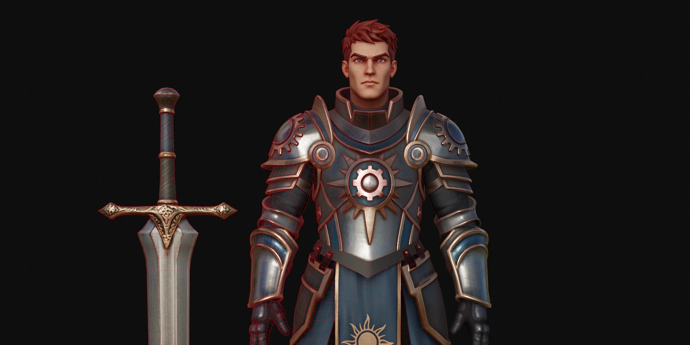

01
Tripo 展示一日完成遊戲角色：AI 3D 從拆件、Quad 到 UE 的完整 Pipeline
Tripo 公開一套從概念圖、部件拆分、P2.0 Quad 網格、8K 來源貼圖、DCC Bridge，到 Maya/Marmoset/Substance/Unreal 的完整角色製作案例，總面數控制在 30K triangles 以下。

AI 3D
★★★★★
完整分析
生成流程
流程把 AI 放在 blockout、高模、retopo 與 first-pass texture 的中段，最終組裝、UV、Bake、貼圖精修與 Rig 仍回到傳統 DCC，適合拿來評估 AI 真正能省掉多少機械工。
製作價值
案例明確給出部件式生成、Quad topology、分部件 polygon budget 與 30K 以下總預算；這比單看單一生成結果更接近遊戲角色驗收。
導入測試
來源也承認非流形、孔洞與 Rig 尚需人工處理，因此導入測試應記錄重試率、局部修網時間、UV/texture transfer 成本與最終 rig deformation。